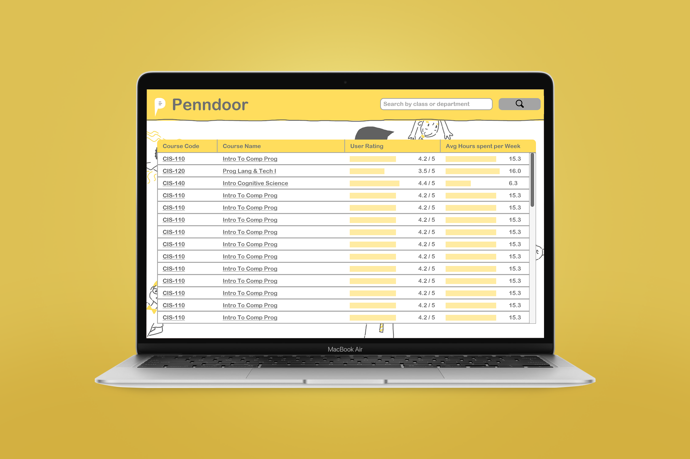

Penndoor

Year: 2020
Duration: 1 month
Team Size: 3 (1 artist, 1 developer, and me)
Area: UX Design
Tools: Adobe XD, Photoshop
Type: Passion Project
Class selection usually happens around the craziest time of the year, right smack in the middle of midterm season. After seeing an abundance of University of Pennsylvania students posting on Facebook asking how about certain classes and professors, my friends and I decided it's time to simplify the process. We came up with Penndoor--a glass door to the UPenn.
Problem Statement
Currently, many platforms exist to facilitate University of Pennsylvania students in class selection, such as PennInTouch and PennCourseReview. While both record class ratings based on certian scales, neither provides any flexibility or specifity for the user. My team and I aimed to incorporate user feedback to investigate the question: What do students really want to know?
User Research
The core design and development team consisted of three people, a developer, an illustrator, and me, the product and UI/UX designer. To gain a wider reach at Penn, I asked a few well-networked friends to join in on UX research, which involved surveying other Penn students on their class selection needs. With their help, we were quickly able to collect responses from 20 people based on what is important to them on a class selection platform.
“I would like to know what kind of assignments would be involved. How understanding professors
are
with
extensions. I guess how easily accessible professors are.”
--a University of Pennsylvania student
To better understand peoples’ needs and wants, I wrote the quotes onto post-it notes and organized it by category into an affinity map.

My wall, featuring the affinity map, divided into 5 categories: Features, Difficulty Info, Time Consumption Info, General Info, and Professor Info
The affinity map helped me realize what mattered to people the most about a class selection platform--1) the
core
features on the platform, such as the ability to filter class search, and 2) the class information displayed
on
the platform, divided into the categories: course
difficulty, time consumption, basic class info, and professor info.
As with most user interfaces, more isn’t better. To filter down the different class info to
what
really mattered, I created a second survey based on the interview results. With the help of my friends, we
collected a total of 24 responses.
User Persona
Piecing together the affinity mapping, the survey results, and what I observed from Facebook posts, I was able to get a clearer image of what the average user looks like. It seems like the majority of the users have two goals:
1. to find high-quality, interesting classes, often within their major
2. to find easy, less time-consuming classes, often for electives
I brought the image of a Penndoor user to life through a user persona.

The Right Questions to Ask
With the user in mind, and the survey at our disposal, the team came together to select a set of prompts to include before the comment box. I explained the importance of using a limited number of prompts, as well as keeping the answers short and easy, as not to deter reviewers. For longer but still important questions, I suggested including them in the suggestions within the comment box. The team also considered a variety of other factors, such as whether the wording is ambiguous, to make the experience as easy as possible. Although still imperfect, this was considered a good starting point:
General rating* [1-5]
Number hours spent on course* [1-50]
Is attendance important?* [Yes/No]
How hard is it to get an A?* [1-5]
Comments* [50-1500]
Suggestion: Talk about the good & bad aspects of the course. Describe the grading structure of the
class.
What is the average grade? How lenient is the instructor? How difficult are the exams and assignments?
Anonymous?* [Yes/No]
Contact Reviewer: Email
UI Design


Some logo prototypes, and the final logo. To highlight our distinguishment of enabling student contribution, the final logo involves a speech bubble.

The final wireframe flow
Key Takeaways
Overall, it was a productive learning experience. I was glad to have exercised my design skills, and to have envisioned a product that could potentially help my fellow classmates. Here are just a few of my takeaways:
1.Work with a team, or ask for help from a friend. Drawing on everyone’s strengths, the work was completed much faster. For example, I asked some well-networked friends to help me with UX research, which expedited the process.
2.Investigate, don’t assume. Even though as Penn students, it was easy for us to assume our experiences represent others', we realized through interviews and surveys that our experiences could differ wildly.
3.Stay Open-minded. My teammates gave great suggestions, even though their expertise was not product design. Through the process, I learned to put down my ego and my role, and to listen to them. Everyone has a unique and valuable perspective, and can enrich the project as a whole.
The developer has gotten busy since then, and the development is stalled. However, the project was definitely worth doing, and I would love to do more projects that would contribute to my community.